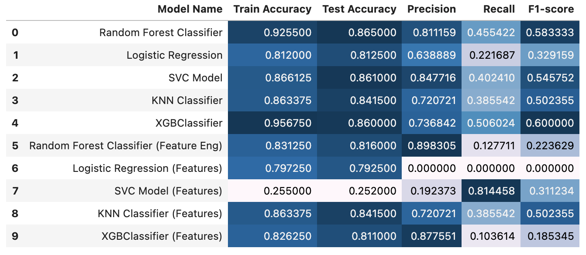

Bank Customer Churn Prediction Model
Predict, Prevent, and Prosper - Predicting Churn with Machine Learning
Link to project repository on GitHub
Goal: build a machine learning model to predict if a bank's customer will churn (leave the bank) or not.
For each instance in the test set, you must predict a 0 or 1 value for the target variable (Classifier).
Steps
- EDA
- data.describe()
- Pie chart
- Correlation heatmap
- Histograms
- KDE plots
- Univariate Exploration
- Feature Engineering (note I will train models on original features and engineered features separately)
- Age Group: grouping customers into age categories to capture non-linear relationships and improve the model’s ability to identify patterns.
- Balance to Estimated Salary Ratio: provides insight into a customer's financial stability. A higher ratio may indicate financial strain, which could increase the likelihood of the customer leaving the bank.
- Tenure Group: grouping tenure into categories to capture non-linear effects and reduce noise.
- Loyalty Index: a composite feature reflecting customer loyalty, combining tenure, the number of products held, and whether they are an active member.
- Balance Above 0: a binary feature indicating whether the customer's account balance is at or above zero.
- Preprocessing
- Split data
- Create pipeline
- OneHot encoding
- StandardScaler
- Create Models
- Model 1: Random Forest Classifier
- Model 2: Logistic Regression
- Model 3: Support Vector Machine
- Model 4: K-Nearest Neighbours
- Model 5: XGBoost
- Visualize models:
- Confusion matrix
- Display feature importance (when applicable)
- Create Models with Engineered Features
- Repeat above (10 models total)
Result of Model Evaluations
- Best Performing Model: Random Forest Classifier
- Worst Performing Model: SVC Model (Features)
- Interestingly, models trained on the original features outperformed those utilizing feature-engineered data. Investigating the reasons behind this unexpected result could provide valuable insights into the feature engineering process and its impact on model performance.
- Age appears to be a significant predictor of customer churn. This finding suggests that the bank should explore the underlying reasons for why age is such a strong indicator. Implementing targeted promotions or incentives for customers in high-risk age groups could effectively reduce churn and retain these valuable customers.
Data
The dataset used in this project is available publicly on Kaggle: https://www.kaggle.com/datasets/shrutimechlearn/churn-modelling
Technologies
Python- pandas, numpy, matplotlib, seaborn
- sklearn (OneHotEncoder, StandardScaler, make_column_transformer, ColumnTransformer, Pipeline, RandomForestClassifier, LogisticRegression, SVC, KNeighborsClassifier, XGBClassifier, cross_val_score, GridSearchCV, ConfusionMatrixDisplay)
- XGBoost